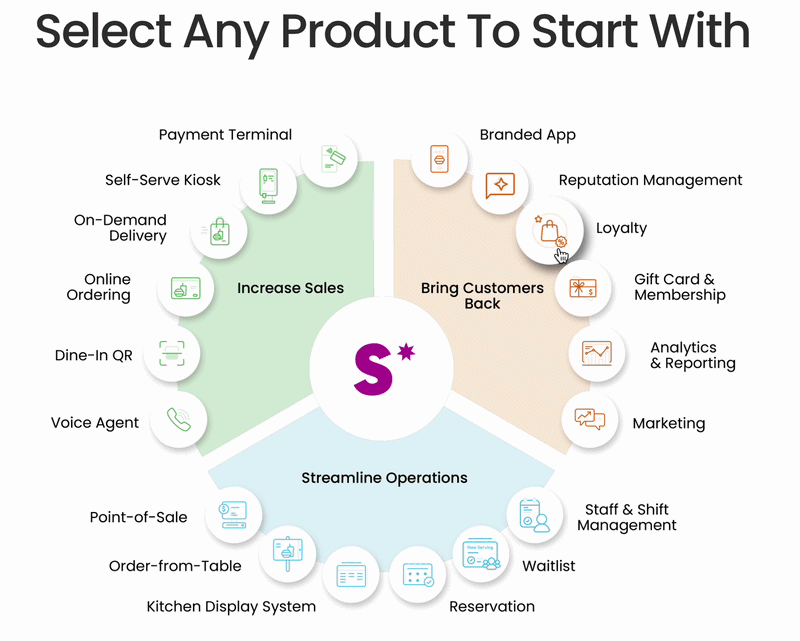
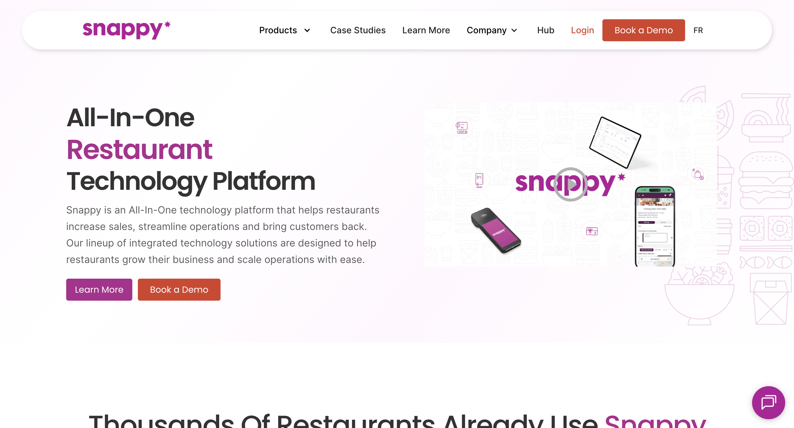
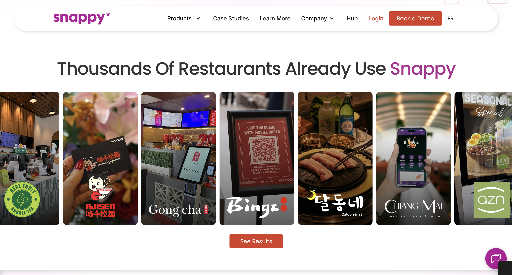
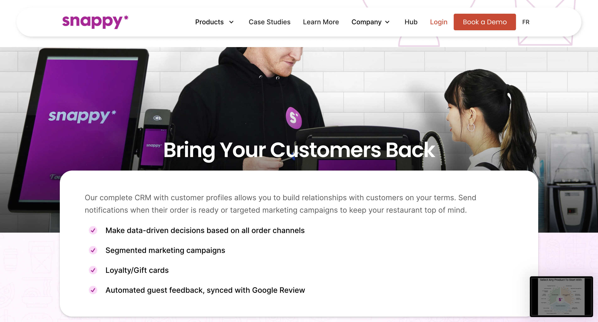

Web Design
Redesigned Snappy's homepage to modernize the visual design, improve the user experience, and bring the site closer to the standard of its competitors.
Snappy's website had not been updated in a while and was starting to feel dated compared to its competitors. I had two weeks left in my internship to make meaningful changes, so I focused on the areas that could have the biggest visual and UX impact.
I started by comparing Snappy's website with competitor websites to understand where the biggest gaps were.

The comparison highlighted a few main opportunities: adding more visual movement, strengthening calls to action, and creating more varied and engaging page structures.
Since the site was built in Webflow, I duplicated the existing site and used it as a sandbox. This let me experiment with layouts, colours, and animations without affecting the live website.
I focused on four main changes:
- More visually engaging components and animations
- Stronger call-to-action buttons
- More varied page structures
- An interactive product pie
One of the new interactive elements was a product pie that lets visitors explore Snappy's different products directly from the homepage.

After completing the first version, I reviewed the website with my team and documented their feedback. I used their suggestions to refine the layout, interactions, and overall visual direction before deploying the final design.
The final redesign gave Snappy's homepage a more modern visual direction, with stronger calls to action, more interactive elements, and a more varied page structure.



Working within a two-week deadline taught me to focus on the changes that would have the biggest impact rather than trying to rebuild everything from scratch.
I also became more comfortable experimenting directly in Webflow and using feedback from my team to refine a design under a tight deadline.